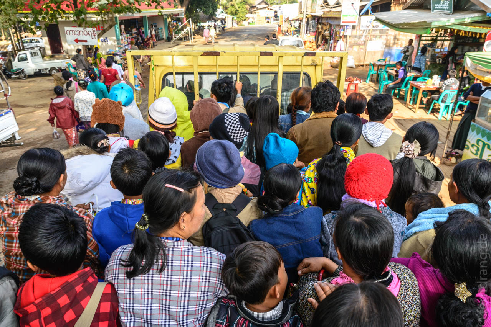
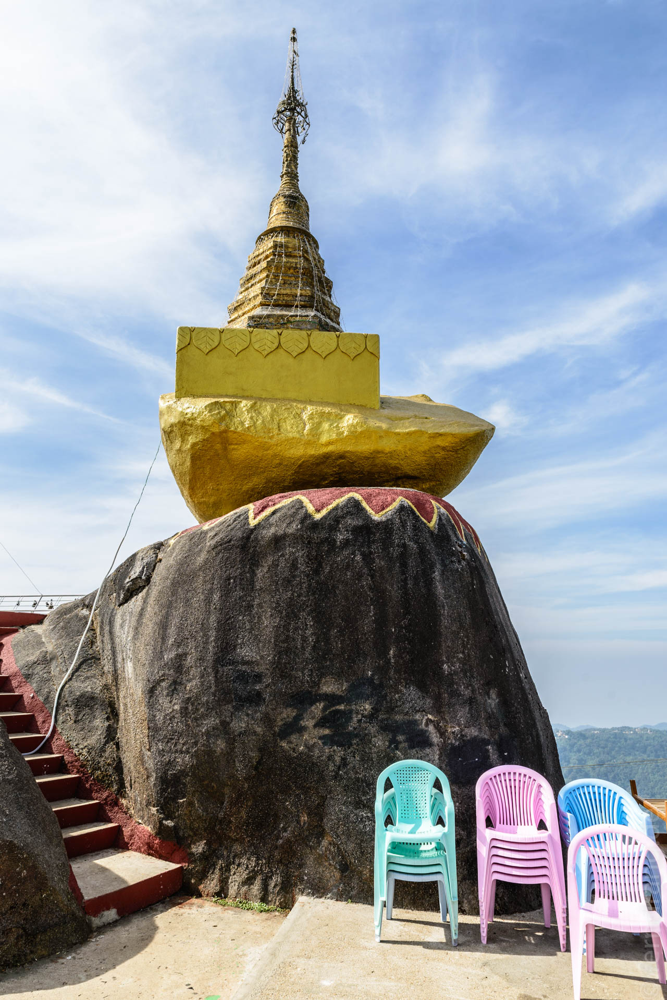
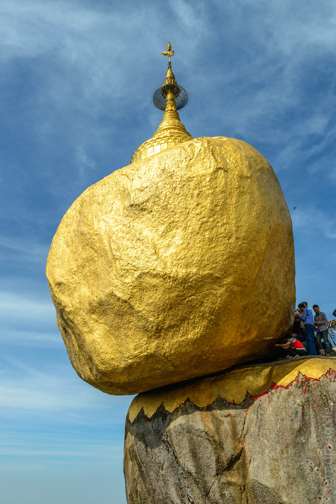

29. Dezember 2013
Goldener Fels
Einer der überschaubaren Vorzüge Bagos ist die günstige Lage als Ausgangspunkt für einen Ausflug zum Golden Rock. Um uns ewige Busfahrten zu ersparen, sind wir mit dem Taxi nach Kyaikto gefahren. Kurz nach Sonnenaufgang war die Straße in dichten Nebel gehüllt. Das sah im ersten Moment malerisch aus, wurde dann aber etwas gruselig, da Busse und Lastwagen hier gerne ihre Scheinwerfer schonen. Derweil hat unser Fahrer minütlich seinen Betelrotz in eine Flasche gespuckt.
Die Fahrt führte durch eine urtümliche landwirtschaftliche Region. Von Strommasten abgesehen sieht man abseits der Straße nichts, was ein Reisender vor hundert Jahren nicht auch gesehen hätte. Nach einer Weile treten grüne Berge aus dem Horizont hervor, die sich die Straße hinauf schlängelt. Je näher man dem Heiligen Stein kommt, desto mehr Stände bitten mit scheppernden Lautsprechern wortreich um Spenden der Pilger.
Kyaikto wirkt sehr freundlich mit seinen kleinen Straßen und vielen Ständen und Läden. Vielleicht ist es auch einfach die fehlende Schnellstraße, die den Unterschied macht. Das Taxi hat uns auf dem halbem Weg nach oben ausgespuckt. Dort geht es extrem geschäftig zu, da es eine Menge Pilger auszunehmen gilt. Der Spenden-Marathon fängt hier so richtig an. Zahllose Buden mit Speisen und Snacks scharen sich um den so genannten Busbahnhof. LKWs mit Pritschen auf der Ladefläche werden über Leitern von den Pilgern gestürmt. Wenn es schon voll aussieht, stopfen die Adjutanten noch bis zur Schmerzgrenze von etwa 50 Mann weiter Fahrgäste auf die Wagen.
Dann geht es hoch über die steile Straße, die sich in wilden Serpentinen den Berg hoch windet. Die Landschaft ist hier sehr schön. Die Hänge sind wild mit Bäumen und Sträuchern überwuchert und laden zum Wandern ein. Mit etwas mehr Zeit und einer Nacht in Kyaikto kann man den Besuch mit einem schönen Trekking-Ausflug verbinden, was sich sehr gelohnt hätte.
Oben angekommen ist von Heiligkeit nichts zu spüren. Um den Goldenen Fels herum ist eine große Plattform gebaut worden, die Mengen von Pilgern aufnehmen soll. Die Anlage gleicht einer improvisierten Zeltstadt, da viele die Nacht hier verbringen. Mit Decken und Schnüren werden Nachtlager gebaut. Mittendrin, fast unscheinbar hockt der Golden Rock – gehalten nur von Buddhas Haar – auf seinem schiefen Sockel. Tief würde er nicht mehr fallen, da mittlerweile eine weitere Terrasse direkt darunter gebaut wurde.
Auch hier sind die Gläubigen eifrig dabei, Blattgold anzubringen. Der Stein ist schon ganz knubbelig an der Seite. Aber auch dieses Privileg ist Männern vorbehalten.
